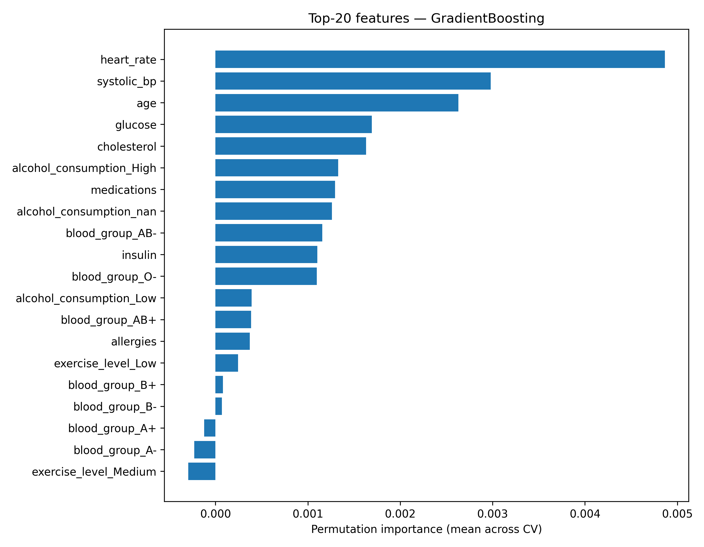

Preterm Birth Risk Test Optimization
Analyzed confidential patient and laboratory data to identify the factors contributing most strongly to preterm birth risk and support the improvement of an existing medical test.
Context
I worked with a pharmaceutical company developing a test to assess the risk of preterm birth. The test combined a wide range of patient-related variables, including lifestyle factors, general health indicators, blood group, hormone levels, and other clinical measurements.
As the existing test was not performing as expected, the objective was to determine which variables were genuinely informative, identify factors contributing little to the predictions, and provide a more rigorous basis for improving the test.
Approach
- Confidential medical data: Analyzed a dataset combining patient demographics, lifestyle information, health indicators, laboratory results, and biological measurements.
- Feature analysis: Evaluated the predictive contribution of each variable to identify the factors most strongly associated with preterm birth risk.
- Model development: Built, compared, and optimized multiple machine-learning models to assess how different variables and combinations of variables affected predictive performance.
- Interpretability: Applied feature-importance and model-explainability techniques, including SHAP and permutation importance, to understand how individual variables influenced model predictions.
- Workflow: Structured the project into successive stages: data preparation → exploratory analysis → model development → performance evaluation → feature-importance analysis.
Results
The analysis highlighted the variables contributing most strongly to the performance of the preterm birth risk test and identified less informative factors that could be removed, reconsidered, or investigated further.
These findings provided the company with a data-driven basis for refining the test and prioritizing the patient and laboratory indicators used in its development.
Public Demonstration
The original medical data and the detailed results of the analysis are strictly confidential and cannot be shared publicly.
To make the methodology and code accessible, I generated a fully synthetic dataset reproducing the general structure, variable types, and format of the original data without containing any real patient information.
The synthetic dataset was intentionally generated without meaningful correlations. It allows users to inspect the expected data structure, run the code, and adapt the analysis pipeline, but the resulting feature importance, model performance, and visualizations are purely illustrative and must not be interpreted as clinical findings.

Methodological Perspective
The combination of careful data preparation, feature engineering, classical machine-learning models, and interpretability techniques produced very strong results on the available data. These methods were sufficient to meet the project objectives, so there was no practical need to introduce more complex architectures.
Deep-learning approaches could still be explored in future work if substantially larger datasets, longitudinal observations, or new data modalities become available. At this stage, however, their additional complexity and reduced interpretability were not justified by the results already achieved.